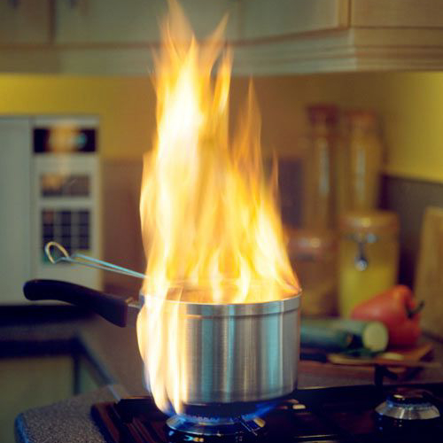
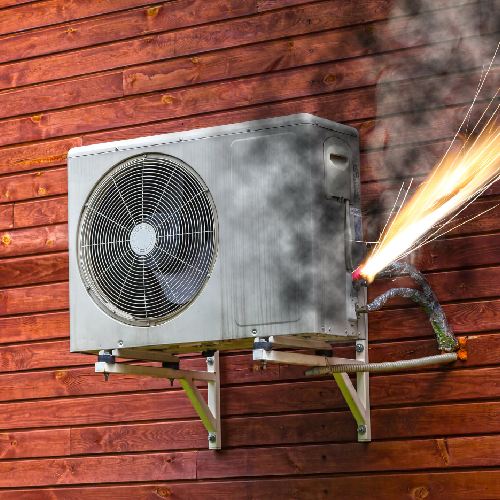
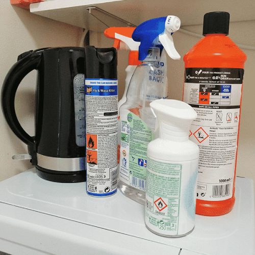
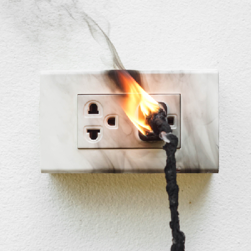
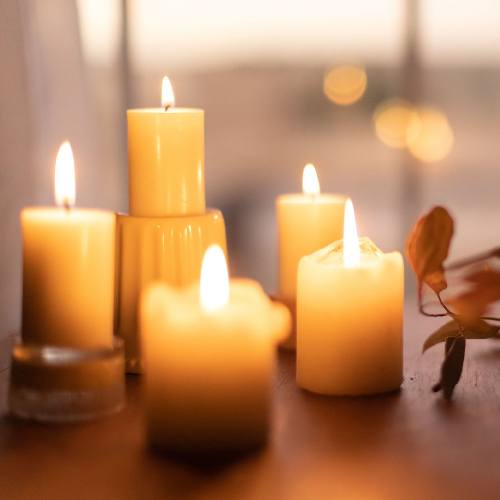
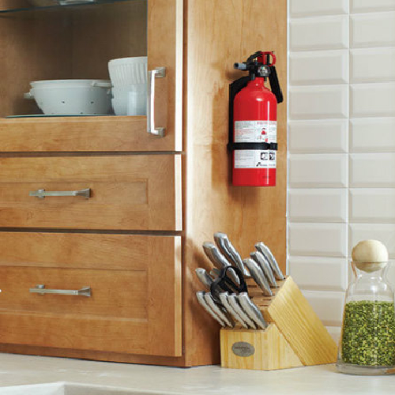

|  |  |  |
|---|---|---|
| Never leave your kitchen unattended while cooking | Inspect your heating sources |
Store any flammable products correctly |
| It only takes a few seconds for a fire to break out. If you need to leave the kitchen for any reason whatsoever, make sure to either ask someone to watch the food for you or turn everything off altogether until you’re back. | House fires may very well be triggered if your home heating sources are not working properly. Be sure to always clean out your air conditioning filters, keep your heaters away from anything that is flammable, and have these things checked out by a professional once a year. |
Household cleaners and items such as hair spray or shaving cream may be very hazardous if exposed to a strong source of heat. Always store these safely in a cool area away from any heaters. |
|  |  |  |
| Maintain your wires | Be cautious with open flames |
Keep a fire extinguisher or blanket at all times |
| Damaged wires can be a detrimental fire hazard and need replacing as soon as possible. Also, remember that wires do get hot when in use, so be sure to check your wire placement and avoiding passing them under a carpet or anywhere that could potentially catch fire. | If you feel yourself dosing off, turn off all your candles beforehand, and if you have pets, keep these open flames out of their reach as much as possible. |
In case something in your home does catch fire, it can be put out as fast as possible. Fire blankets are also very useful for putting out small fires before they become something larger and fiercer. |